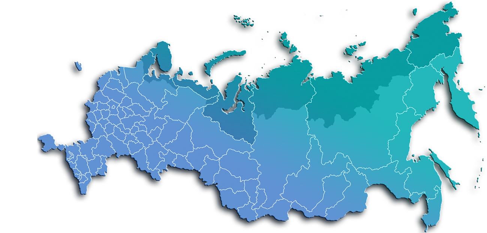

Вы можете использовать метод "parallax" для этой цели. Вот пример кода с комментариями: ```html
<!DOCTYPE html>
<html>
  <head>
    <style>
      /* Стили для блока */
      .container {
        display: flex;
      }

      .text {
        width: 50%;
        overflow-y: scroll; /* Enable vertical scrolling */
      }

      .image {
        width: 50%;
        position: sticky;
        top: 0; /* Fixed to the top of the container */
      }
    </style>
  </head>
  <body>
    <div class="container">
      <div class="text">
        <p>Some long text that will change with scrolling...</p>
      </div>
      <div class="image">
        
      </div>
    </div>
    <script>
      /* Вызов функции при скролле страницы */
      // Listen for scroll events on the text container
      document.querySelector('.text').addEventListener('scroll', function () {
        // Check if the user has scrolled to a certain point
        if (this.scrollTop > 500) {
          // Replace 500 with your desired threshold
          // Change the text to a different one
          this.querySelector('p').textContent = 'Some other text...';
        }
      });
    </script>
  </body>
</html>
